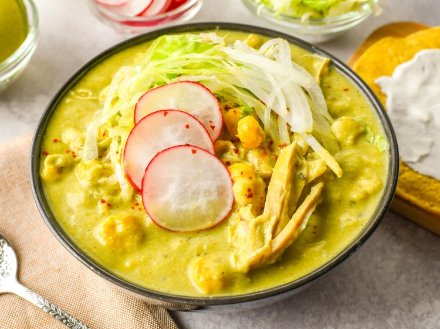

Pozole Verde with Chicken Recipe

Description
Pozole Verde with chicken, classic Mexican dish used on cold days all around Mexico.
Ingredient List
Sauce
- 2 large poblano peppers
- 12 tomatillos, husks removed
- 2 jalapeno peppers, stemmed
- 1 small green bell pepper - stemmed, seeded, and quartered.
- 1/4 of large white onions, quartered
- 3 large garlic cloves, peeled
- 1 cup pepitas
- 1 cup chopped fresh cilantro
- 1 1/2 teaspoons of salt
- 1 cup of water
- 1 tablespoon grapeseed oil or other neutral oil
Soup
- 3 (25 ounce) cans of hominy
- 2 chicken breast
- 1 medium white onion
- 1 large head garlic
- 3 bay leaves
- 1 tablespoon of dried marjoram
- 1 tablespoon of dried Mexican Oregano
- 4 sprigs of fresh thyme (or 1 tablespoon of dried thyme)
- 3 tablespoons of chicken boullion powder
- 10 cups of water
Garnishes (Optionsal)
- Mexican Oregano powder, to taste
- Piquin pepper powder or another dried pepper powder, to taste
- 1/2 head iceberg lettuce, finely sliced
- 1 large white onion, finely chopped
- 2 cups finely sliced radish
- 8 limes, halved or quartered
- 10 tostadas
- 2 cups of mexican crema
Directions
- For Sauce: Char poblano peppers directly over a gas flame or under the broiler,
rotating as needed to ensure the skin is blistered and charred on all sides. Use tongs to transfer roasted peppers to the bowl,
the top with plastic wrap so the peppers steam. After 10 minutes, discard plastic wrap. Under cool running water, use clean hands to strip away the charred skin. Discard seeds.
- Place a large skillet over medium-high heat; add tomatillos, jalapeno peppers, green bell pepper, onion and
garlic. Slightly toast, turning frequently, untill the mixture is aromatic and just begins to deepen in color. Remove tomatillo mixture from the skillet.
- Meanwhile, add pepitas to a small skillet over medium-high heat. Toast them lightly, tossing constantly with a spoon, until golden brown; remove from heat.
- Add roasted peppers, tomato mixture, toasted pepitas, cilantro, salt, and water to the jar of blender. Blend until smooth.
- Heat oil for 1 minute in a large saucepan over medium heat, then pour in blended sauce. Cook sauce for 8 to 10 minutes, stirring constantly.
- For soup: Combine hominy, chicken, onion, garlic, bay leaves, marjoram, oregano, thyme, chicken bouillon, and watter in a large stock pot.
Bring to a boil over medium-high heat, then turn the heat to low and simmer until chicken is no longer pink at the center at the center
and juices run clear, 45 to 50 minutes. Skim off any foam or fat that rises to the sirface during simmering. An instant-read thermometer inserted near
the center of chicken should read 165 degrees F (74 degrees C).
- Use tongs to remove the chicken to a plate; allow it to cool. Discard onion, garlic head,
bay leavesm and thyme springs. Reserve the stock for the base of the soup.
- When chicken is cool enough to handle, use two forks to shred the meat. Then set it aside.
- As chicken cools, use glass measuring cup to coop out 1/2 cup hominy and a bit stock. Pour in a blender pitcher, and blend until smooth. Stir
the mixture back into the pot with broth to thicken pozole.
Recipe Homepage